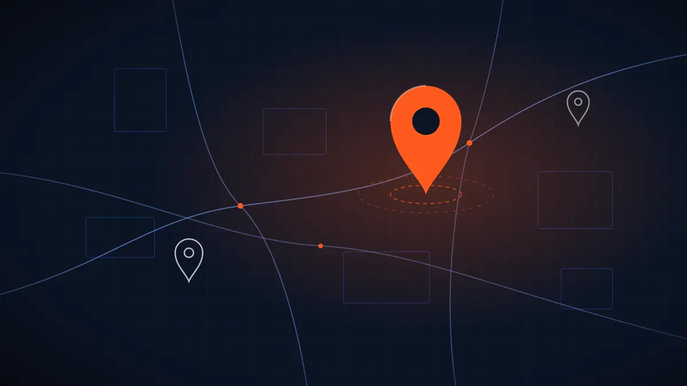

פרופיל עסק בגוגל: איך פותחים, מאמתים ומשפרים אותו צעד אחר צעד
כשמישהו מחפש "חשמלאי באזור" או "קפה ליד", הדבר הראשון שהוא רואה הוא לא אתר. הוא רואה מפה ושלושה עסקים. הנה איך דואגים שהעסק שלכם יופיע שם, ושמי שרואה אותו גם מתקשר.

בקצרה: פרופיל עסק בגוגל (Google Business Profile) הוא הכרטיס של העסק בחיפוש ובמפות. הוא בחינם, ופותחים אותו דרך החשבון של גוגל, ממלאים פרטים ומאמתים שהעסק באמת שלכם.
מה שהכי משפיע הוא פרטים מלאים ומדויקים, קטגוריה נכונה, תמונות אמיתיות, וביקורות שאתם עונים עליהן. אתר טוב שמחובר לפרופיל משלים את התמונה ועוזר להפוך צפייה לפנייה.
מה זה פרופיל עסק בגוגל, ולמה הוא חשוב
פרופיל עסק בגוגל הוא הכרטיס שמופיע בצד או בראש תוצאות החיפוש כשמחפשים את שם העסק, ובמפות כשמחפשים שירות באזור. יש בו שם, כתובת או אזור שירות, שעות פתיחה, טלפון, קישור לאתר, תמונות וביקורות.
לעסק מקומי זה הרבה פעמים המקום הראשון שבו לקוח פוגש אתכם. אנשים מחפשים "מספרה ברחובות" או "שיפוצניק בחולון", רואים מפה עם כמה עסקים, ומחליטים לפי מה שמופיע שם: כמה ביקורות יש, מה כתוב בהן, אם יש תמונות, ואם העסק פתוח עכשיו. חלק מהם מתקשרים ישר מהכרטיס, בלי להיכנס לאתר בכלל.
לכן כדאי להתייחס לפרופיל כמו לחלון ראווה. הוא לא מחליף אתר, אבל הוא מה שגורם לאנשים להגיע אליו. ביחד הם עובדים הכי טוב: הפרופיל מביא את החשיפה במפות, והאתר עונה על השאלות ומקל על הפנייה. כתבנו על התמונה הרחבה במדריך קידום אורגני לעסק קטן.
פתיחה ואימות, צעד אחר צעד
התהליך עצמו פשוט, והוא בחינם. מה שלוקח זמן הוא בעיקר האימות.
- חפשו קודם את העסק בגוגל מפות. לפעמים כבר קיים כרטיס שנוצר אוטומטית או שמישהו הוסיף. אם יש, לוחצים על "תובעים בעלות על העסק" במקום לפתוח חדש, כדי לא ליצור כפילות.
- היכנסו עם חשבון גוגל של העסק. עדיף חשבון שאתם שולטים בו לאורך זמן, לא חשבון של עובד או של מי שבנה לכם אתר.
- מלאו שם עסק אמיתי. בדיוק כמו שהוא מופיע על השלט ובחשבוניות. הוספת מילות מפתח לשם ("יוסי אינסטלציה זול ומהיר בתל אביב") נוגדת את ההנחיות של גוגל ועלולה לגרום להשעיית הפרופיל.
- בחרו קטגוריה ראשית. זו אחת ההחלטות החשובות. בחרו את הקטגוריה שהכי מתארת את מה שאתם עושים, ואפשר להוסיף קטגוריות משניות.
- כתובת או אזור שירות. אם לקוחות מגיעים אליכם, הוסיפו כתובת. אם אתם מגיעים ללקוחות (שיפוצים, הדברה, מאמן אישי בבית), אפשר להסתיר את הכתובת ולהגדיר אזורי שירות.
- טלפון ואתר. מספר שעונים בו, וקישור לעמוד הנכון באתר.
- אימות. גוגל מבקשת להוכיח שהעסק שלכם. השיטה משתנה מעסק לעסק: לפעמים שיחה או הודעה, לפעמים מייל, לפעמים סרטון קצר שמראה את העסק ואת השילוט. עקבו אחרי מה שמופיע אצלכם במסך, ואל תשנו את הפרטים בזמן שהאימות בתהליך.
מה למלא כדי שהפרופיל יעבוד
פרופיל שנפתח ונשאר חצי ריק לא עושה הרבה. הנה מה ששווה להשקיע בו, לפי סדר חשיבות.
| מה ממלאים | למה זה חשוב | טיפ קטן |
|---|---|---|
| שעות פתיחה | אנשים מסננים לפי "פתוח עכשיו" | עדכנו שעות מיוחדות בחגים |
| קטגוריות | קובעות לאילו חיפושים תופיעו | ראשית אחת מדויקת, ומשניות רק אם הן נכונות |
| שירותים או מוצרים | עוזרים להבין מה בדיוק אתם עושים | השתמשו במילים של הלקוחות, לא של המקצוע |
| תיאור העסק | הפסקה שמספרת מי אתם | כתבו מה עושים, לאן מגיעים, ומה מייחד אתכם |
| תמונות | עסק עם תמונות אמיתיות נראה אמין יותר | צלמו את המקום, הצוות והעבודה, לא תמונות מאגר |
| קישור לאתר | ממשיך את השיחה | הפנו לעמוד שמתאים לשירות, לא תמיד לדף הבית |
שני דברים שכדאי לבדוק פעם בכמה חודשים: שהטלפון והשעות עדיין נכונים, ושאף אחד לא הציע "עריכה" לפרטים שלכם. גוגל מאפשרת לגולשים להציע שינויים, ולפעמים הם מתקבלים בלי שתשימו לב.
ביקורות: איך מקבלים, ואיך עונים
ביקורות הן חלק גדול ממה שאנשים בודקים לפני שהם מתקשרים. כמה הצעות פשוטות:
- בקשו. הרבה לקוחות מרוצים פשוט לא חושבים לכתוב. אחרי עבודה טובה, שלחו הודעה קצרה עם הקישור הישיר לכתיבת ביקורת, שאפשר להעתיק מתוך ניהול הפרופיל.
- אל תקנו ואל תציעו פרס. ביקורות קנויות או ביקורות בתמורה להנחה נוגדות את ההנחיות של גוגל, ועלולות להימחק יחד עם הביקורות האמיתיות.
- ענו לכולן. תודה קצרה וספציפית לביקורת טובה. לביקורת שלילית, תשובה רגועה ועניינית שמציעה לפתור. מי שקורא את התשובה הוא לא רק הכותב, אלא כל לקוח עתידי.
- אל תתווכחו בפומבי. אם יש מחלוקת, הציעו להמשיך בטלפון.
ביקורת שלילית אחת לא מפילה עסק. מה שפוגע יותר הוא שתיקה, או תשובה כועסת.
איך הפרופיל והאתר עובדים ביחד
גוגל מנסה להבין אם העסק אמיתי, מה הוא עושה ואיפה. כשהפרטים בפרופיל, באתר ובמקומות אחרים ברשת זהים (אותו שם, אותה כתובת, אותו טלפון), קל לה יותר לסמוך עליהם. כשבכל מקום כתוב משהו אחר, זה מבלבל גם את גוגל וגם את הלקוחות.
כדאי שבאתר יופיעו:
- השם, הכתובת או אזור השירות והטלפון, בדיוק כמו בפרופיל.
- עמוד נפרד לכל שירות מרכזי, ואם אתם עובדים בכמה ערים, עמוד שמסביר אילו אזורים אתם משרתים. על זה בדיוק אנחנו עובדים בקידום בגוגל.
- כפתורי חיוג ווואטסאפ שבולטים בטלפון, כי רוב מי שמגיע מהמפה נמצא בטלפון.
אם אין לכם עדיין אתר, אפשר להתחיל מדף נחיתה אחד ברור שהפרופיל מפנה אליו, ולהרחיב בהמשך לאתר מלא לעסק.
טעויות נפוצות שכדאי להימנע מהן
- שני כרטיסים לאותו עסק. קורה כשפותחים חדש במקום לתבוע בעלות על קיים. זה מפצל את הביקורות ומבלבל.
- מילות מפתח בשם העסק. נראה כמו קיצור דרך, אבל עלול להוביל להשעיה.
- פרופיל שנפתח ונשכח. שעות לא מעודכנות, טלפון ישן, ותמונה אחת מלפני שנים.
- כתובת של בית פרטי מוצגת בלי צורך. אם הלקוחות לא מגיעים אליכם, עדיף אזור שירות.
- קישור לאתר שלא עובד טוב בטלפון. כל המאמץ להופיע במפה הולך לאיבוד אם העמוד שנפתח איטי או מבלבל. כתבנו על זה במדריך מהירות אתר.
שאלות נפוצות
כמה עולה פרופיל עסק בגוגל?
הפתיחה והניהול של הפרופיל בחינם. מה שעולה כסף הוא דברים סביבו, כמו פרסום ממומן או עזרה מקצועית בקידום, ואלה לא חובה.
אפשר לפתוח פרופיל בלי כתובת של חנות?
כן. עסק שמגיע ללקוחות יכול להסתיר את הכתובת ולהגדיר אזורי שירות. הכתובת עדיין משמשת את גוגל לאימות, אבל היא לא מוצגת לגולשים.
תוך כמה זמן הפרופיל מתחיל להופיע?
אחרי שהאימות עובר, הפרופיל יכול להופיע די מהר בחיפוש לפי שם העסק. ההופעה בחיפושים כלליים כמו "שירות באזור" תלויה בהרבה דברים, כמו המרחק של המחפש, התחרות והפעילות בפרופיל, ולכן אין לה זמן קבוע.
מה עושים עם ביקורת לא הוגנת?
קודם כול עונים בנימוס ובעניינים. אם הביקורת מפרה את ההנחיות של גוגל, למשל ספאם או תוכן פוגעני, אפשר לדווח עליה מתוך ניהול הפרופיל. גוגל מחליטה אם להסיר אותה.
צריך אתר אם יש לי פרופיל בגוגל?
הפרופיל מביא חשיפה, אבל מקום לספר בו מעט. אתר נותן מקום להראות עבודות, להסביר שירותים ולענות על שאלות לפני שמתקשרים. אצלנו המחיר נקבע בהצעה כתובה עם מחיר סגור, אחרי שיחת היכרות קצרה.